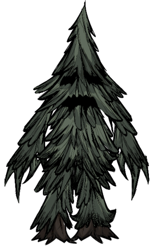

Treeguard

Treeguard is a secret boss who apears if you take down too many trees hes biggest form has 3750hp  , deals 61.8 damage
, deals 61.8 damage  for players and 187.5 damage
for players and 187.5 damage  for mobs, he also has a -100 sanity loss while in combat
for mobs, he also has a -100 sanity loss while in combat
Kiting pattern(for every atack)
Phase 1:
Atack 1: bait, 5 atacks, back, 5 atacks
Safe kiting pattern
Phase 1:
Atack 1: bait, 4 atacks, back, 4 atacks
Full gameplay loop
Explanation
Since Treeguard only have 1 atack you can do the same kiting pattern the whole fight and win
Tanking Strategie
Itens required
1x 1x
1x
Full Gameplay loop
Explanation
Treeguard is one of the easyest bosses to kill in Don't starve together world, this article shows how to kill its biggest form, the small ones are the same, but have least health  and does least damage
and does least damage